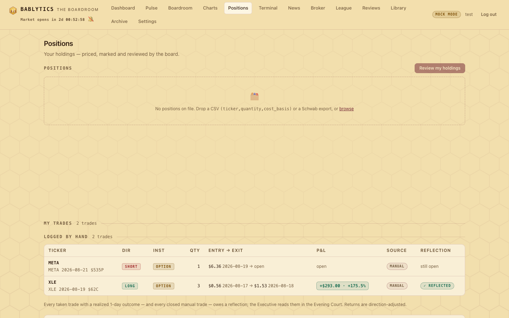

Desk · your own record
Positions and Your Trades
Upload your holdings from a generic CSV or a Schwab export and have the board review them; mark leads you actually took, log trades made outside the app (options count ×100), and file the reflections the Evening Court reads.
The Positions page (#/positions) keeps two records that are yours, not the board's. The top half is your holdings — a table you populate by uploading a CSV, marked to market and reviewable by the board. The bottom half is MY TRADES — the leads you marked as taken, the trades you logged by hand, and the reflections each one owes. Nothing here touches a brokerage: holdings are a file you upload, and trades are entries you type.

Uploading holdings#
Drop a file on the zone (or click browse). Two formats are accepted, detected automatically by bablytics/positions.py:
- Generic CSV
ticker,quantity,cost_basis— header optional, comma- or whitespace-separated, cost basis per share and optional.- Schwab positions export
- Recognised by a header row carrying Symbol and Quantity / Qty (Quantity). Dollar signs, commas and percent signs are stripped; rows for cash, money market, account totals and option symbols are skipped and reported; Schwab's "Cost Basis" column is the total cost of the lot, so it is divided by quantity to fit the per-share column.
Duplicate tickers merge into one row (summed quantity, weighted-average cost). The upload replaces your holdings; if nothing in the file parses, the server answers 400 and leaves the existing holdings untouched. Clear removes them all. The table columns are Ticker, Qty, Cost, Last, Today, Value, P&L $, P&L %, Board (the latest completed run's grade for that ticker, when the board wrote it up) and Verdict; prices come from the market-data source with a 60-second cache, and a totals row closes the table.
Review my holdings#
Review my holdings convenes a board mini-session over whatever is in the table. Each holding becomes a "long" candidate enriched with the same technicals, value stats and news the morning pipeline uses; the whole board grades it (mock or real mode, exactly like the morning); and the result is condensed into one verdict per ticker:
- HOLD — final grade 60 or above
- TRIM — 45 to 60
- EXIT — below 45
Click a reviewed row to expand the Executive's summary and the three most opinionated member comments. Progress shows as a stage chip while the review runs; the latest review is persisted and shown again when you come back. Like every grade in the app, a verdict is model output about a setup, not advice about your account.
MY TRADES: the owner's record#
The board is held to account by the pyramid and the journals; this section holds you to account. It lists every lead you marked as taken (date, ticker, instrument, grade, realized 1d/5d, reflection status) and, in a separate LOGGED BY HAND table, every trade you entered manually (ticker, direction, instrument, qty, entry → exit, P&L, source, reflection status). A banner at the top of the dashboard — "✍️ N trade reflection(s) due" — clicks through to here.
The TAKE toggle#
Every lead card and the expanded lead carry a TAKE / ✓ TAKEN toggle. Tap it to record that you actually took the trade; the card gets an accent ring and the lead joins MY TRADES. Taking is idempotent (POST /api/trades/take); un-taking is refused with 409 once a reflection has been filed — a reflected trade stays on the record.
Log a trade#
The Log a trade form records a trade taken outside the app's leads (POST /api/trades/manual). Fields:
- Ticker
- Required; up to 12 characters of letters, digits,
.-/. - Instrument · Direction
- Stock or Option; Long or Short. Choosing Option reveals a Contract label field (free text such as
09/18 $250C). - Qty · Entry price · Entry date
- All required; qty and price must be positive.
- Exit price · Exit date
- Optional, but they go together — give both or neither — and the exit date may not precede the entry date.
- Note
- Optional: the why, for the court.
Validation happens twice: inline in the form, and again on the server, whose 400 detail is shown under the form verbatim. When the exit is known the server computes the realized result: (exit − entry) × sign × qty, where a short flips the sign, and option P&L applies the 100-share contract multiplier — one long contract from $0.56 to $1.53 is (1.53 − 0.56) × 100 × 1 = +$97.00. Realized percent is the direction-signed price change, +173.2% in that example. A manual trade is "open" until its exit is on record; the Log button re-renders MY TRADES immediately.
Reflections#
A reflection comes due when a taken lead has its realized 1-day outcome (recorded by the 16:45 outcomes job) or when a manual trade has an exit on record. Write reflection opens a modal with a read-only summary of the trade and two questions:
- What happened? — always required.
- What would you do differently? — required when the realized return is negative; optional when it is not. The form says so, and the server enforces it (
400on an unfavorable outcome without an answer).
favorable is computed server-side as signed return ≥ 0 and stored with the reflection, together with the return itself. Reflections written since the previous court are handed to the Executive's Evening Court prompt verbatim, under "THE OWNER'S OWN TRADE REFLECTIONS", to weave into the night's lesson-taking. A trade with a reflection can no longer be un-taken.
The owner scorecard#
When a Saturday week-in-review exists, MY TRADES is headed by the Owner review card — the review's own grade and summary of how your taken trades and reflections held up that week — linking to the full report on the Reviews page. Servers without a review yet simply show no header.